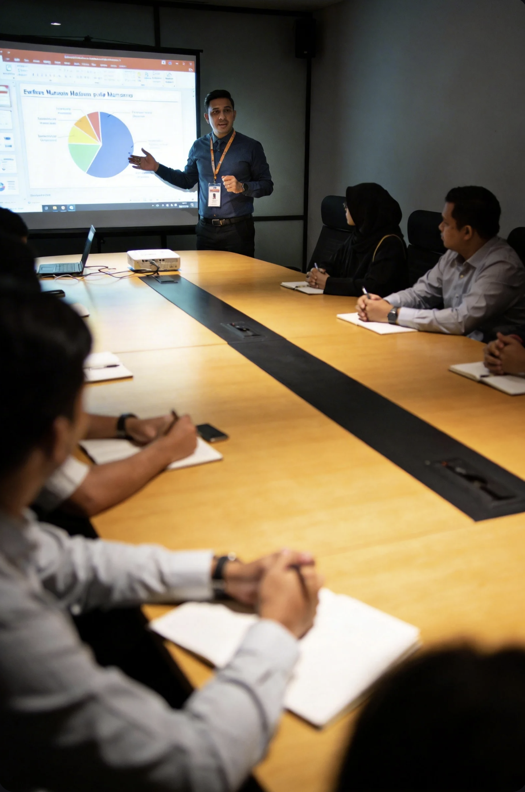
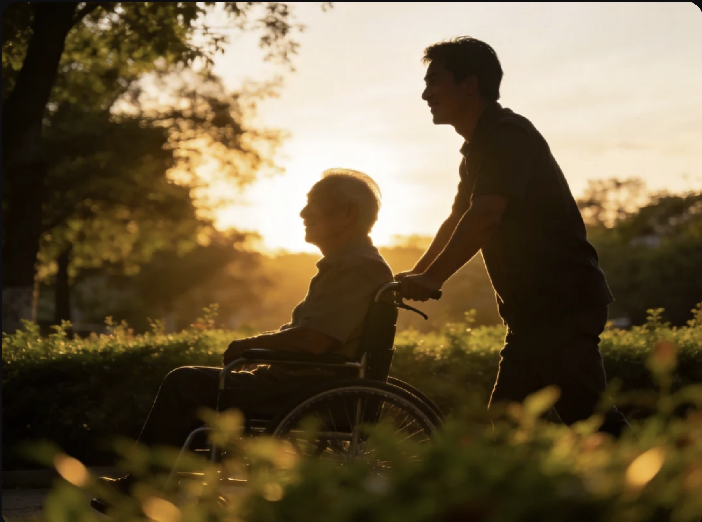
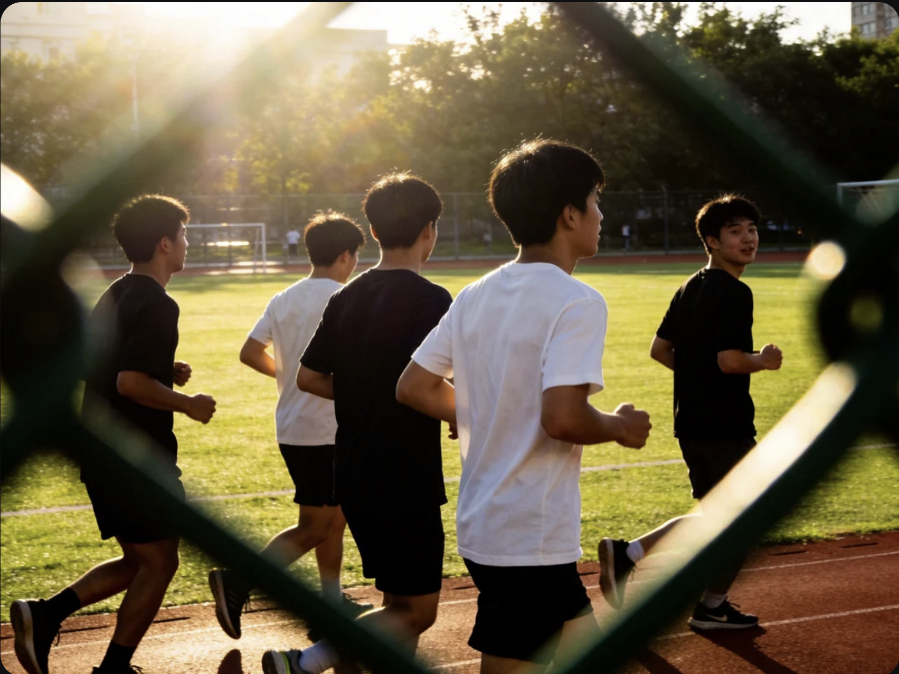
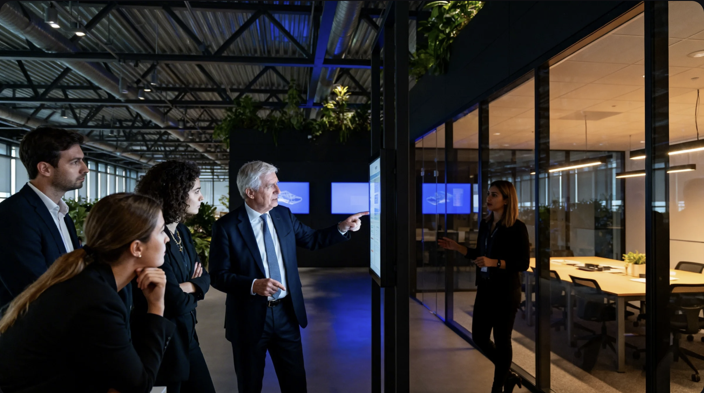

Sustainable Life Value System (SLVS)
Two Sustainable Pathways: SVOCF,IZYWORLD Learning Pathway, and One Sustainable Cooperation Layer

How credibility is ensured
Transparency-first governance, an evidence spine, and quality assurance—so recognition remains verifiable and audit-ready.
Learning into Life, Value into Action
FLOURISH is GLIRA’s guiding philosophy and developmental direction. It articulates the principles and pathway by which learning becomes lived practice, and value orientation becomes responsible action. GLIRA operates as both an international certification and accreditation alliance and an innovation-driven research exchange community—connecting members, partners, and local nodes to co-develop standards, evidence practices, and real-world pilots
A guiding philosophy for shared flourishing across cultures. It sets GLIRA’s direction and pathway: learning becomes lived practice, and value orientation becomes responsible action. GLIRA operates as both an international certification and accreditation alliance and an innovation-driven research exchange community—connecting members, partners, and local nodes to co-develop standards, evidence practices, and real-world pilots.
Each letter stands for a guiding principle and working quality. Together, they express the direction and practice pathway GLIRA advances—across membership, partnerships, research exchange, and evidence-based recognition.

Futureproof is the capacity to remain functional under disruption and to recover with strengthened capability after shocks.
- Shock resistance: limit cascading losses, protect critical baselines, and maintain essential functions.
- Adaptive learning: translate disruption into structured learning inputs, update assumptions, and improve decision rules.
- Regenerative improvement: restore performance while strengthening resilience for future uncertainty.
Its foundation is meta-capability: sensing, self-regulation, learning, collaboration, and renewal across changing conditions.
Life learning treats lived experience as a continuous source of development and evidence-informed improvement.
- Learning from experience: translate success, failure, conflict, and stability into transferable insight and practical adjustments.
- Meta-learning:refine how learning happens—upgrading strategies from reflection to structured review and systems awareness.
- Everyday integration: embed learning into daily choices, conversations, and habits, so development becomes sustainable rather than episodic.
It supports progression across levels by strengthening reflection, review, and behavioral consolidation.

Omnibound supports cross-context applicability while respecting cultural, legal, and ethical boundaries.
- Across contexts: work across cultures, regions, and viewpoints through capability-focused criteria and evidence practices.
- Respecting boundaries: protect differences, preserve local meanings, and avoid flattening diversity.
It reflects a principled neutrality: GLIRA does not prescribe a single ideology, while maintaining baseline safeguards such as dignity, non-harm, consent, and responsible practice.

Unity of systems connects five domains into one developmental network: body, emotion, cognition, social relations, and environment.
It emphasises feedback and interdependence rather than isolated traits: bodily states influence emotion and attention; emotion influences judgement; judgement shapes social choices; and social choices shape environmental consequences—while the environment also feeds back into wellbeing and decision-making.
Unity is reflected in observable integration under real conditions—for example, staying stable under fatigue, maintaining clarity under stress, and acting responsibly under pressure.
The aim is a capability ecosystem where improvements in one domain can reinforce growth in others.

Regeneration builds the capacity to recover after imbalance and to strengthen practice for the next cycle.
- Self: restore energy, repair strain, and install safeguards that reduce repeated depletion.
- Systems: rebuild trust through clearer roles, agreed rules, and better coordination after conflict or failure.
- Society: improve structures after disruption so collective wellbeing increases in observable ways.
Regeneration supports long-term resilience by converting setbacks into learning, adjustment, and responsible redesign.

Integrity is a trust infrastructure built through three alignments.
- Person: consistency between words and actions, including private and public behaviour.
- Process: transparent procedures, explainable decisions, and traceable records.
- Purpose: mission stability and value coherence across operations and communication.
In certification and accreditation, integrity is reflected in evidence authenticity, fair review, and governance consistency.
Sustainability is a repeatable pattern of practice that keeps value cycles viable over time.
- Time sustainability: decisions preserve future options and avoid long-term depletion.
- Relational sustainability: interactions build trust capital rather than consuming it.
- Resource sustainability: proportional effort and cost support durable outcomes.
Evidence-informed evaluation supports sustainability through traceability, reviewability, and iterative improvement.

Holistic wellbeing is flourishing across five domains: physical, emotional, cognitive, social, and environmental.
- Physical: energy, recovery, sustainable functioning.
- Emotional: stability, resilience, effective regulation.
- Cognitive: clarity, learning capacity, complexity handling.
- Social: healthy relationships, collaboration, trust building.
- Environmental: responsibility, harmony with nature, sustainable action.
It serves as a shared direction and reference orientation for development across contexts.
Futureproof sets the shock-handling baseline. Life learning drives continual upgrade. Omnibound enables cross-cultural application with boundary respect.
Unity of systems connects domains into reinforcing loops. Regeneration upgrades the system after imbalance. Integrity protects trust through person–process–purpose alignment.
Sustainability keeps decisions and evaluation repeatable over time. Holistic wellbeing provides the outcome lens across five domains.
The result is an audit-ready growth logic designed for uncertainty and long-term credibility.
Start with transparency
We publish governance rules, evidence logic, and role boundaries to build trust before scaling.